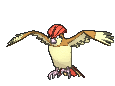

-
Bulbasaur #001

- Grama
- Veneno
"Bulbasaur carrega uma semente nas costas desde o nascimento. À medida que seu corpo cresce, a semente também cresce."
-
Ivysaur #002

- Grama
- Veneno
"O bulbo nas costas de Ivysaur cresce à medida que absorve nutrientes e exala um aroma agradável quando floresce."
-
Venusaur #003

- Grama
- Veneno
"Enquanto Venusaur se aquece ao sol, pode converter a luz solar em energia. Como resultado, fica mais forte durante o verão."
-
Charmander #004

- Fogo
"Se Charmander estiver saudável, a chama na ponta de sua cauda queimará vigorosamente e não se apagará mesmo que fique um pouco molhada."
-
Charmeleon #005

- Fogo
"Charmander é muito impetuoso por natureza, por isso procura constantemente por oponentes. A sua agressão não será reprimida se não vencer."
-
Charizard #006

- Fogo
"Charizard usa suas asas para voar na altura das nuvens. Quanto mais experiência ganha em batalha, maior a temperatura de suas chamas."
-
Squirtle #007

- Água
"Squirtle não usa sua carapaça só para sua proteção. As ranhuras em sua superfície e a sua forma arredondada ajudam a minimizar a resistência na água, permitindo que nade em alta velocidade."
-
Wartortle #008

- Água
"Wartortle muitas vezes se esconde na água para perseguir suas presas. Ao nadar rapidamente, ele move as orelhas para manter o equilíbrio."
-
Blastoise #009

- Água
"Blastoise possui incríveis canhões de água em sua concha e usa jatos de água para atacar os inimigos com toda a força de um foguete."
-
Pidgey #016

- Normal
- Voador
"Pidgey tem um senso de direção extremamente aguçado. É capaz de voltar para seu ninho sem errar, mesmo que seja removido dos lugares que conhece."
-
Pidgeotto #017
- Normal
- Voador
"Pidgeotto é um Pokémon cheio de vitalidade que voa constantemente em busca de presas pelo grande território que mantém."
-
Pidgeot #018

- Normal
- Voador
"Pidgeot consegue voar a até 2.450 km/h em busca de presas. Suas grandes garras são temidas como armas malignas."
-
Pikachu #025

- Elétrico
"Quando Pikachu está irritado, descarrega a energia armazenada em suas bochechas. Quando vários desse Pokémon se reúnem, sua eletricidade pode aumentar e causar tempestades com raios."
-
Raichu #026

- Elétrico
"Se as bochechas de Raichu ficarem sobrecarregadas, ele aterrará sua cauda no solo para descarregar eletricidade. Zonas queimadas podem ser encontradas perto de seu ninho."
-
Gastly #092

- Fantasma
- Veneno
"Gastly tem seu corpo composto apenas por gás. Apesar de não ter substância, pode envolver um oponente de qualquer tamanho e causar asfixia. Seu corpo gasoso reduz rapidamente quando é exposto a ventos fortes."
-
Haunter #093

- Fantasma
- Veneno
"Na escuridão total, onde nada é visível, Haunter espreita, perseguindo silenciosamente a sua próxima vítima. Ele gosta de se esconder no escuro e tocar em ombros com sua mão gasosa. Seu toque causa estremecimentos sem fim."
-
Gengar #093

- Fantasma
- Veneno
"Para roubar a vida de sua presa, Gengar se esconde em sombras e espera silenciosamente por uma oportunidade. Escondendo-se nas sombras das pessoas à noite, absorve o calor, fazendo suas vítimas terem calafrios."
-
Onix #095

- Pedra
"Onix tem um ímã no seu cérebro que age como um compasso para que não se perca enquanto está andando por túneis debaixo da terra. Ele rapidamente perfura o solo a 80 km/h, contorcendo-se e torcendo seu corpo maciço e robusto."
-
Cubone #104

- Terra
"Cubone usa a caveira de sua falecida mãe. Às vezes, os sonhos de Cubone o fazem chorar, mas cada lágrima que Cubone derrama o torna mais forte. Quando a memória de sua falecida mãe o leva às lágrimas, seus gritos ecoam tristemente dentro da caveira que ele usa na cabeça."
-
Marowak #105

- Terra
"Quando Cubone evoluiu para Marowak, o crânio de sua mãe se fundiu a ele e seu temperamento se tornou cruel. Este Pokémon superou sua tristeza para desenvolver um novo corpo robusto. Marowak enfrenta seus oponentes com bravura, usando um osso como arma."
-
Magikarp #129

- Água
"Magikarp é um Pokémon patético e pouco poderoso que só consegue pular e salpicar água. Pode saltar alto em raras ocasiões, mas nunca mais de dois metros."
-
Gyarados #130
- Água
- Voador
"Quando Magikarp evolui para Gyarados, suas células cerebrais sofrem uma alteração estrutural. Dizem que esta alteração é a culpada por este Pokémon ser violento por natureza. Uma vez que aparece, ele fica furioso e permanece enfurecido até destruir tudo ao seu redor."
-
Lapras #131

- Água
- Gelo
"Lapras transporta pessoas através do mar em suas costas. Humanos quase o levaram à extinção. Dizem que este Pokémon canta melancolicamente procurando pelos outros que restaram da sua espécie."
-
Snorlax #143

- Normal
"Um dia normal da vida de Snorlax consiste em comer e dormir. É um Pokémon tão dócil que é fácil de ver crianças brincando em cima da sua barriga enorme. Este Pokémon guloso come onstantemente, exceto quando está dormindo. Ele devora quase 900 quilos de comida por dia. Os sucos digestivos do estômago podem dissolver qualquer tipo de veneno. "
-
Mewto #150

- Psíquico
"Mewtwo é um Pokémon que foi criado por manipulação genética. Entretanto, apesar do poder científico dos humanos ter criado seu corpo, eles falharam em dar a Mewtwo um coração sensível. Seu DNA é quase igual ao de Mew. No entanto, seu tamanho e disposição são muito diferentes."
-
Mew #151

- Psíquico
"Dizem que Mew possui a composição genética de todos os Pokémon. É capaz de ficar invisível para passar desapercebido quando alguém se aproxima."